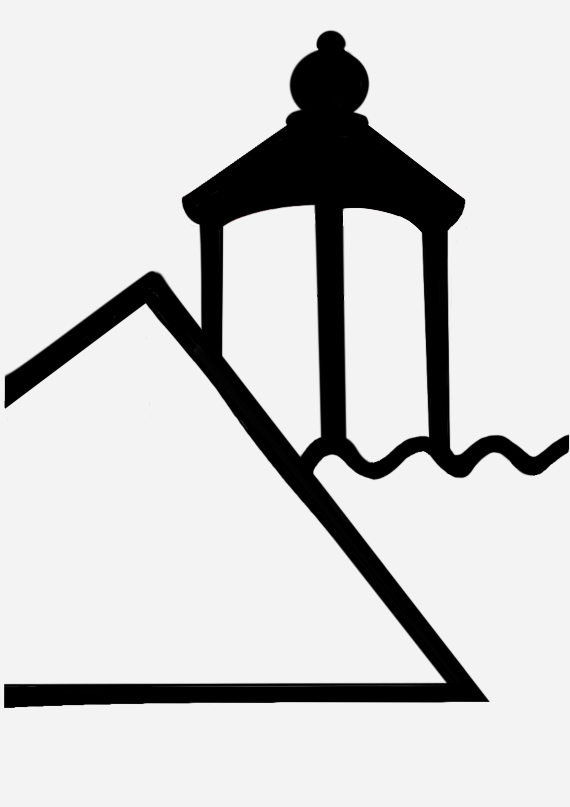

Fyrpasserboligen ved Møns Klint


10 gæster ꞏ 4 soveværelser ꞏ 6 senge ꞏ 2
badeværelser
Kontaktoplysninger
Fulde navn:
Torben Nøhr
Email: torben.noehr.04@gmail.com
Adresse:
Fyrvej 8, 4791 Borre
Telefonnummer: +45 29 29 03 70
Om Fyrpasserboligen
Fyrpasserboligen ved Møns Klint ligger lige ved siden
af Møns Fyr. Så snart mørket sænker sig starter Fyret
og kaster sin lyskegle hen over træerne og ud over
Østersøen. Fyret blev etableret i 1845 og ligger
lige, hvor Møns Klint begynder.
Fyrpasserboligen ligger på en naturskøn grund lige ud til Østersøen med den mest fantastiske havudsigt.
Vi har egen stiadgang
ned til stranden. Herfra kan man sejle i vore havkajakker
eller gå lange ture ud til Klinten.
Boligen
I Fyrpasserboligen boede før i tiden 2 familier, der
passede Fyret. Nu benytter vi huset som fritidsbolig.
Huset er på 1. sal opdelt i to afdelinger, hvilket gør
det meget anvendeligt for flere familer - eller som
en voksenafdeling og en børneafdeling.
Gæster bedes selv medbringe sengetøj og håndklæder,
men der er dyner, puder, lagner, sæbe, shampoo,
opvaskemiddel, klude og viskestykker.
En del møbler er “loppefund”. De er beregnet til
at blive brugt, - mere end at “se godt ud”. Huset
har været brugt af mange både store og små børn. Det kan
måske ses hist og her, - men det gør det også rart at
opholde sig i for alle. Der er to badeværelser af ældre
dato, men de virker fint.
Der er fire soveværelser ialt, men de er meget forskellige:
Masterbedroom med udsigt til havet er unikt. Så er der et
stort værelse med to dobbeltsenge med udsigt til haven.
Et lille “pigeværelse” med to enkeltsenge og endelig en
dobbeltseng på et “repos” bag et gardin.
Huset står også tit tomt, og da det ligger tæt på naturen
kan det ikke undgås at der kan være lidt spindelvæv hist
og her.
Der er en meget stor grund med mange muligheder for både
store og små børn: Trampolin, gynger, hængekøjer,
fodboldbane, badminton, en “hule”, en strand. Der er
kajakker til både små og store.
På kanten af havet har vi etableret et skønt vildmarksbad
med plads til 5 personer. Det opvarmes med en indbygget
brændeovn. Fantastisk at sidde der, med udsigt udover
Østersøen.
Omkring Fyrpasserboligen er der et rigt dyreliv: Rådyr,
fasaner og harer, traner, vandrefalke, havørne og af og
til sæler. Der kan være hugorme på grunden. Mange kommer
for at fiske og her er næsten altid ornitologer på udkig
efter sjældne fugle.
Gæsteadgang
Gæsterne har adgang til hele huset.
Andre ting, der er værd at bemærke
Fyrpasserboligen ligger på den yderste del af
Møn og derfor er der ikke altid god mobildækning
Der er dog hurtig internetforbindelse via lyslederkabel.
Spørgsmål og svar
Hvordan man bruger vildmarksbadet?
1. Vandslangerne tilsluttes. Der er tre slanger i alt.
Check, at der ikke er “klumper” undervejs 2. Badet fyldes til 10 cm over kanten på “sidde” - plinten.
2. Badet fyldes til 10 cm over kanten på “sidde” - plinten.
Det tager cirka 1 time. Låget forbliver på lige indtil, der
skal bades. 3. I mellemtiden hentes brænde i det gule hus
3. I mellemtiden hentes brænde i det gule hus

 4. Først når badet er fyldt med vand må der fyres
4. Først når badet er fyldt med vand må der fyres
op med brænde. Der må ikke bruges aviser.
Opvarmningen tager ca 4 timer. Der skal være
fuld gang i brændeovnen, der fyldes med brænde
hver halve time
 5. Temperaturen i vandet skal op på 39-40 grader.
5. Temperaturen i vandet skal op på 39-40 grader.
Og højst 41grader, ellers føles det alt for varmt.
Er der børn med bør den ikke være over 37.
Der er trådløs adgang til thermometret
 6. Der kan trækkes kabel til belysning fra stik-
6. Der kan trækkes kabel til belysning fra stik-
kontakt på terrassen
 7. Der er badekåber og badesko i kælderskakten
7. Der er badekåber og badesko i kælderskakten

 8. Efter badet rengøres det i det varme vand med en
langskaftet børste, der findes i pavillonen
8. Efter badet rengøres det i det varme vand med en
langskaftet børste, der findes i pavillonen
9. Vandet tappes af. Det tager ca en time
Check, at der ikke er “klumper” undervejs
2. Badet fyldes til 10 cm over kanten på “sidde” - plinten. Det tager cirka 1 time. Låget forbliver på lige indtil, der
skal bades.
3. I mellemtiden hentes brænde i det gule hus
4. Først når badet er fyldt med vand må der fyres op med brænde. Der må ikke bruges aviser.
Opvarmningen tager ca 4 timer. Der skal være
fuld gang i brændeovnen, der fyldes med brænde
hver halve time
5. Temperaturen i vandet skal op på 39-40 grader. Og højst 41grader, ellers føles det alt for varmt.
Er der børn med bør den ikke være over 37.
Der er trådløs adgang til thermometret
6. Der kan trækkes kabel til belysning fra stik- kontakt på terrassen
7. Der er badekåber og badesko i kælderskakten
8. Efter badet rengøres det i det varme vand med en
langskaftet børste, der findes i pavillonen 9. Vandet tappes af. Det tager ca en time
Hvordan sorterer man affald?
Affald sorteres i følgende fraktioner
• Madaffald lægges i pedalspanden med den grønne pose.
• Glas, metal og plast lægges i den grå sorteringsboks på væggen
• Aviser, papir og pap lægges også i sorteringsboksen, nederst
• Pant kan lægges i sorteringsboksen eller tages med hjem
• Restaffald lægges i den sorte pose under køkkenvasken
• Madaffald lægges i pedalspanden med den grønne pose.
• Glas, metal og plast lægges i den grå sorteringsboks på væggen
• Aviser, papir og pap lægges også i sorteringsboksen, nederst
• Pant kan lægges i sorteringsboksen eller tages med hjem
• Restaffald lægges i den sorte pose under køkkenvasken
Hvordan man forlader huset?
Når huset forlades er det vigtigt at tømme alle affaldsbeholdere,
kaffefiltre og opvaskemaskinen.
Lagner og viskestykker lægges i entreen under det hvide chatol.
Alle døre og vinduer skal være lukket.
kaffefiltre og opvaskemaskinen.
Lagner og viskestykker lægges i entreen under det hvide chatol.
Alle døre og vinduer skal være lukket.
Hvad kan man opleve på Møn?
Gode spisesteder?
Klintholm Havn har flere spisesteder:
ND122 er en gourmet-restaurant, der har åbent til både frokost og middag.
Portofino har pizza og enkle italienske retter,
HYTTEFADET har rødspætter og andre danske retter samt RESTAURANT KLINTHOLM med fiskebuffet, men kun til frokost.
I sommerperioden har drinksbaren “Piers to heaven” åben og der er et stort udendørs madmarked.
I Stege kan vi anbefale SLAGTER STIG med grøntsagsbuffet og kød fra montren, som man selv vælger
DAVIDs en meget anerkendt frokostrestaurant.
På HOTEL MØN kan man få dansk traditionel mad med brun sovs.
I LUFFES GÅRD er der god servering på Cafe Møns Bryghus.
Ved Jydelejet tæt på Møns Camping er der ny cafe ved “Hotel Huno”. Meget lækker og fantastisk udsigt.
Endelig er der på Nyord en kendt kro LOLLESGAARD, hvor man kan sidde både inde og ude.
Der er også et spisested ved Nordbohandlen.
ND122 er en gourmet-restaurant, der har åbent til både frokost og middag.
Portofino har pizza og enkle italienske retter,
HYTTEFADET har rødspætter og andre danske retter samt RESTAURANT KLINTHOLM med fiskebuffet, men kun til frokost.
I sommerperioden har drinksbaren “Piers to heaven” åben og der er et stort udendørs madmarked.
I Stege kan vi anbefale SLAGTER STIG med grøntsagsbuffet og kød fra montren, som man selv vælger
DAVIDs en meget anerkendt frokostrestaurant.
På HOTEL MØN kan man få dansk traditionel mad med brun sovs.
I LUFFES GÅRD er der god servering på Cafe Møns Bryghus.
Ved Jydelejet tæt på Møns Camping er der ny cafe ved “Hotel Huno”. Meget lækker og fantastisk udsigt.
Endelig er der på Nyord en kendt kro LOLLESGAARD, hvor man kan sidde både inde og ude.
Der er også et spisested ved Nordbohandlen.
på google-kortet
kan du se nærmere om placeringen samt links
til spisestedernes hjemmesider.
ND122
"Portofino"
"Hyttefadet"
"Piers to heaven"
"Slagter stig"
"Davids"
"Hotel møn"
Luffes gård
"Hotel huno"
"Lollegaard"
Hvad gør man hvis man bliver bidt af en hugorm?
Hvis børn under 15 år bides af en hugorm
ring 112 uanset om de har symptomer eller ej.
Barnet holdes i ro, bid- stedet holdes hævet, højere end hjertet.
Brug ikke
beroligende piller, afsnøring eller sugning.
Alle børn vil blive indlagt til observation i 24 timer.
Nærmeste sygehus er Nykøbing Falster, en times kørsel herfra.
Hvis voksne bides andre steder end i benene
eller løvrigt får symptomer vil de også blive indlagt til observation.
Forebyggelse
1. Lær børn at de aldrig må tage en slange op.
2. Løb ikke rundt på bare fødder i græsset
3. Sørg for stivkrampevaccination.
Farlighed
Hugormebid er ikke så farligt, som f.eks.
Hvepsestik eller flåt-bid.
I de sidste 110 år er kun 7 personer døde af hugormebid.
Årligt bliver ca 70 personer bidt,
mest i Jylland, som regel turister og flest børn i alderen 5-9.
Symptomer opstår øjeblikkeligt
eller indenfor en halv til to timer.
Symptomerne består af
lokal hævelse, opkast, åndedrætsbesvær m.v.
Nærmeste skadestue er på sygehuset i Nykøbing Falster, ca en times kørsel herfra.
Ring 1818 til skadestuen eller lægevagten.
Hvad man selv skal medbringe?
Gæster bedes selv medbringe
sengetøj og håndklæder,
men der er dyner, puder, lagner, sæbe, shampoo, opvaskemiddel, klude og viskestykker.
sengetøj og håndklæder,
men der er dyner, puder, lagner, sæbe, shampoo, opvaskemiddel, klude og viskestykker.
Hvordan bruges kajakkerne?
Der er to store kajakker og to små.
Redningsveste findes i fyrrummet i kælderen.
Pagajer er i samme rum som kajakkerne.
Om sommeren ligger de store kajakker ved stranden. Nøgle til dem findes i det hvide nøgleskab.
Redningsveste findes i fyrrummet i kælderen.
Pagajer er i samme rum som kajakkerne.
Om sommeren ligger de store kajakker ved stranden. Nøgle til dem findes i det hvide nøgleskab.
Hvordan bruges gasgrillen?
Gasslangen kobles til gasflasken ved at trække op i
“ringen”
og dernæst trykke den hårdt ned over gasflasken.
Hanen drejes så de “røde flammer” vises. Husk at slukke efter brug
og demontere slangen.
Gasblusset tændes et ad gangen og antændes ved at trykke på den
røde knap til venstre, der laver “gnister”.
og dernæst trykke den hårdt ned over gasflasken.
Hanen drejes så de “røde flammer” vises. Husk at slukke efter brug
og demontere slangen.
Gasblusset tændes et ad gangen og antændes ved at trykke på den
røde knap til venstre, der laver “gnister”.
Hvad er koden til internettet?
Koden er HVuFTJtV.